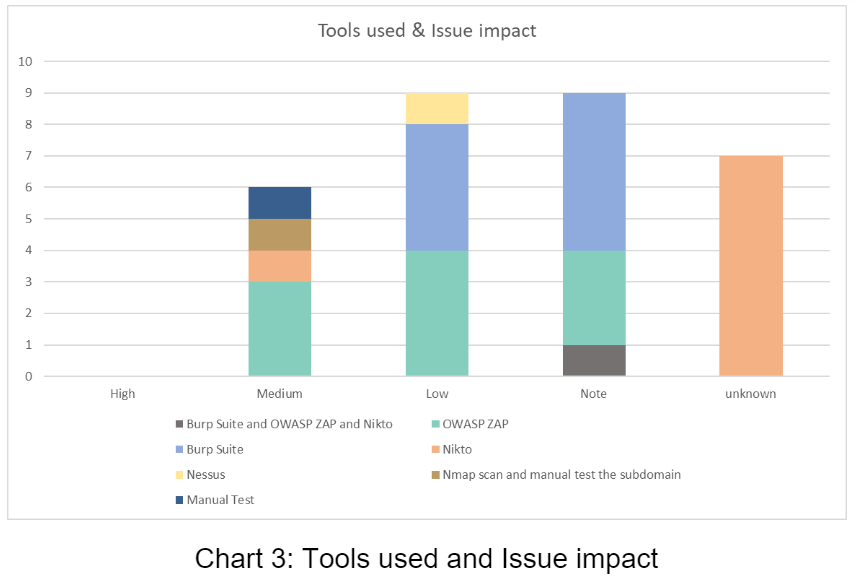

Contribution & Evaluation
of the projects
Project in Unit 6
My evaluation
In Unit 6, we are asked to work on a project as a team. Our team is assigned with an e-commercial website that we are asked to identify the associated regulations, evaluate potential vulnerabilities, and summarize the potential recommendations and mitigations.
As this is teamwork, we set up the communication channel at the very beginning of the module, so we can get familiar with the communication tools. Most of the team communication is based on Slack, where we can post updates on the progress and share our ideas at any time. We usually discuss our team meeting schedule on Slack as well. Regarding the team meeting, we use Microsoft Teams, as it is available for us to share our screens with each other to keep the high quality of discussion.
The assignment is challenging for me at the beginning as I was not familiar with the network and information security management topic before I started the module. Whenever we are sharing our theoretical ideas, I was unconfident and afraid if I would say something does not correct. However, I overcame my fear very soon and get comfortable in the discussion. I really like the feeling when everyone is proactive in the discussion and get a productive conclusion by the end of the meeting.
Each team member collaborated with each other nicely. We started by building the document layout, and we listed all the actions to be done and provided links to extension reading from our Slack comment. All the team members helped the team from gathering as much as information to bringing the topic back to the core concept.
We are appreciated that Dr. Nawaz had a chance to review our document with us and provided precious advice and recommendation. The review gave us great insight into how to convey the core concept and our main idea to our target reader.
My Individual Contribution
• Being proactive in the team discussion
• Conduct the team meeting and prepare the topics
• Provide meeting notes for the team
• Provide ideas regarding document layout, and to-do-list
• Participate in finalizing the report (add references, aligned font, set up page break and table of content, etc.)
• Create a timeline diagram

Project in Unit 11
My evaluation
In Unit 11, we need to execute the scanning process, analyze results, summarize findings, and provide recommendations. I am happy that we would have a chance to learn this topic in such a practical way, and I was excited when I found out we have this project in this module.
We started this assignment quite earlier right after we finish the project of Unit 6, as this is the lesson that we learned from the previous project. Starting the project earlier means we have more time to plan for our project carefully, and we have more resources to distribute.
We started by scanning the website with different tools. This was a challenging part, as each of us came into various types of issues. In my case, I was trying to scan the website with Burp Suite at first, but it failed several times, and each fail took me more than 4 hours. The issue did not reoccur when I tried again in my workplace with the office’s internet, so I concluded the issue should be an internet connection issue.
We received a lot of information from the scanning results. The information is too much that we spent some time sorting them out so it can be easier to be analyzed. Compared to the previous assignment where we were searching for extended information, in this assignment, we were spending our time compressing the existing data and trying to transfer them into useful insight to raise the quality of the content.
I enjoy working on this project with my teammates as everyone is working hard and trying their best to contribute their skills and experience to the team. We have our assignment in SharePoint that everyone can update at any time. While I am polishing the document, I can always see my teammates working on it as well in parallel. I appreciated the chance and time to work with my team, which have become an important memory and experience that I can apply in my future career.
My Individual Contribution
• Being proactive in the team discussion
• Conduct the team meeting and prepare the topics
• Provide meeting notes for the team
• Provide ideas regarding document layout, and to-do-list
• Participate in finalizing the report (add references, aligned font, set up page break and table of content, etc.)
• Design the Introduction
• Provide scanning results from Burp Suite scanning
• Visualize the scanning result into charts
